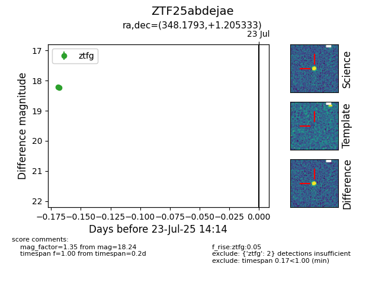

Target ZTF25abdejae at 2025-07-23 14:14, see:
FINK: fink-portal.org/ZTF25abdejae
Lasair: lasair-ztf.lsst.ac.uk/objects/ZTF25abdejae
ALeRCE: alerce.online/object/ZTF25abdejae
alt names
ZTF25abdejae (ztf,fink)
coordinates:
equatorial (ra, dec) = (348.1793,+1.20533)
galactic (l, b) = (78.9761,-53.02700)
photometry
last ztfg=18.24
2 ztfg detections
